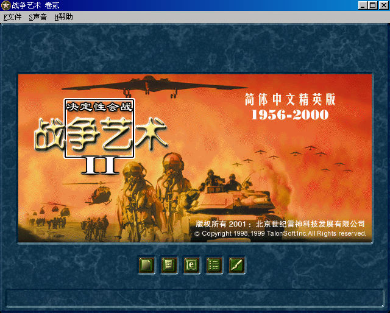
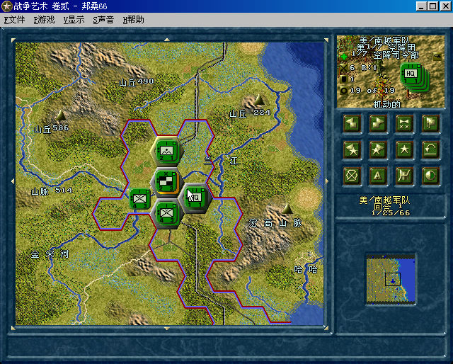

名稱：戰爭藝術2 (The Operational Art of War II: Modern Battles 1956-2000，簡中版) 簡介：TalonSoft 1999年出品的回合制戰術遊戲，2001年由世紀雷神簡中化並代理發行 [待補]。   保護：光碟 限制：只能在Win9x系統上執行，否則會出現「不是正確的Win32應用程式」訊息。 備註：檔名含簡中文字，只能在簡中系統上安裝與執行。

